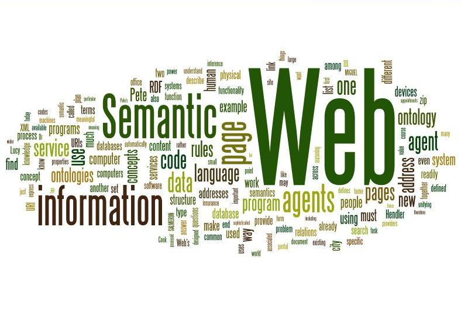
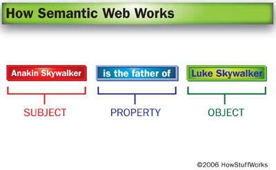

What is Semantic Web
The Semantic Web is a web of data. It is about two things. It is about common formats for integration and combination of data drawn from diverse sources, where on the original Web mainly concentrated on the interchange of documents. It is also about language for recording how the data relates to real world objects. That allows a person, or a machine, to start off in one database, and then move through an unending set of databases which are connected not by wires but by being about the same thing.
How does it work
The structuring is simple: knowledge is expressed as descriptive statements, saying some relationship exists between one thing and another. "Jane has a mother, Susan" or "Susan is a mother of Jane". An enormous amount of people's knowledge can be expressed in sentences like these. "Part #4521 has a price, $19.95." "George has a city of residence, Washington D.C." "The United States has a president, George W. Bush." This kind of information structuring was standardized for the Web in 1999 as RDF, but the basic technique goes back decades if not millenia.
Five Properties
-
Linked Data
The Semantic Web is a Web of data — of dates and titles and part numbers and chemical properties and any other data one might conceive of. RDF provides the foundation for publishing and linking your data. Various technologies allow you to embed data in documents (RDFa, GRDDL) or expose what you have in SQL databases, or make it available as RDF files.
-
Vocabularies
At times it may be important or valuable to organize data. Using OWL (to build vocabularies, or “ontologies”) and SKOS (for designing knowledge organization systems) it is possible to enrich data with additional meaning, which allows more people (and more machines) to do more with the data.
-
Query
Query languages go hand-in-hand with databases. If the Semantic Web is viewed as a global database, then it is easy to understand why one would need a query language for that data. SPARQL is the query language for the Semantic Web.
-
Inference
Near the top of the Semantic Web stack one finds inference — reasoning over data through rules. W3C work on rules, primarily through RIF and OWL, is focused on translating between rule languages and exchanging rules among different systems.
-
Vertical Applications
W3C is working with different industries — for example in Health Care and Life Sciences, eGovernment, and Energy — to improve collaboration, research and development, and innovation adoption through Semantic Web technology. For instance, by aiding decision-making in clinical research, Semantic Web technologies will bridge many forms of biological and medical information across institutions.
RDF Explanation
RDF is a standard model for data interchange on the Web. RDF has features that facilitate data merging even if the underlying schemas differ, and it specifically supports the evolution of schemas over time without requiring all the data consumers to be changed. RDF extends the linking structure of the Web to use URIs to name the relationship between things as well as the two ends of the link (this is usually referred to as a “triple”). Using this simple model, it allows structured and semi-structured data to be mixed, exposed, and shared across different applications. This linking structure forms a directed, labeled graph, where the edges represent the named link between two resources, represented by the graph nodes. This graph view is the easiest possible mental model for RDF and is often used in easy-to-understand visual explanations.